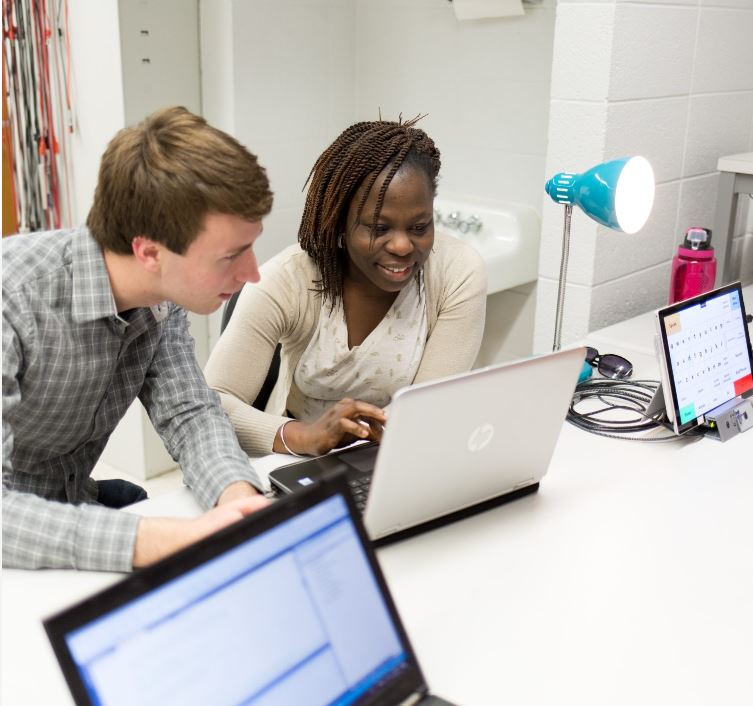

Being a Computer Science major is challenging yourself everyday to learn more. Professors will teach and guide you
thru this journey providing essencial tools, valuable knowledge, and contact with the most current technologies, as
well as assigning projects that will make you learn the hands on crucial skills. Nonetheless, you will learn not only
computer skills, but also essential abilities for the world of work, such as good communication, good listening,
working with a team, planning, commitment, and organization. This major will teach you how to be prepared to be a
successful employee and a better human being.
In case you are wondering if Computer Science is the right major for you, there are a few questions that you can ask
yourself to help you understand more this course: